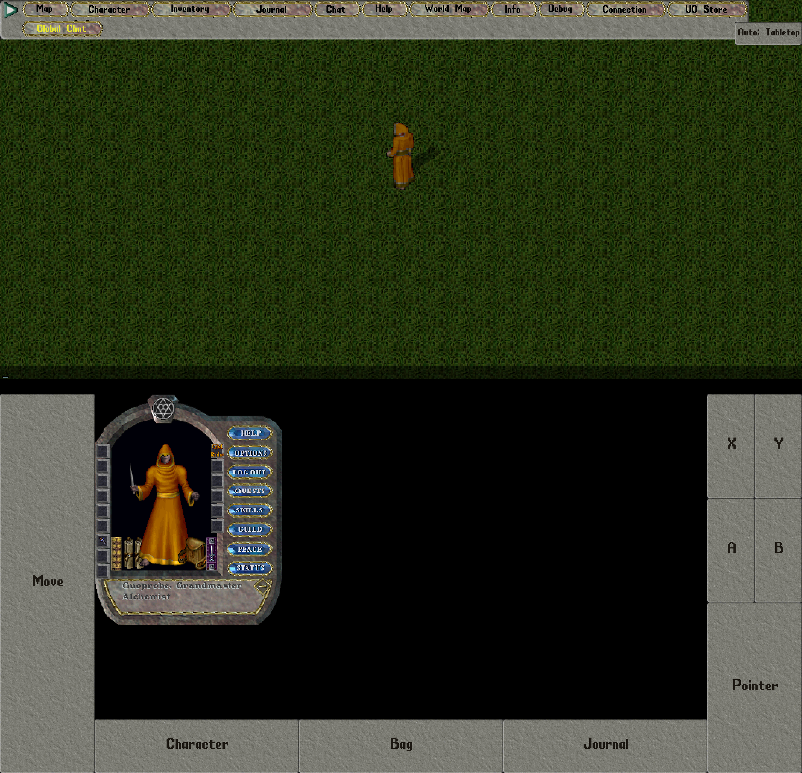
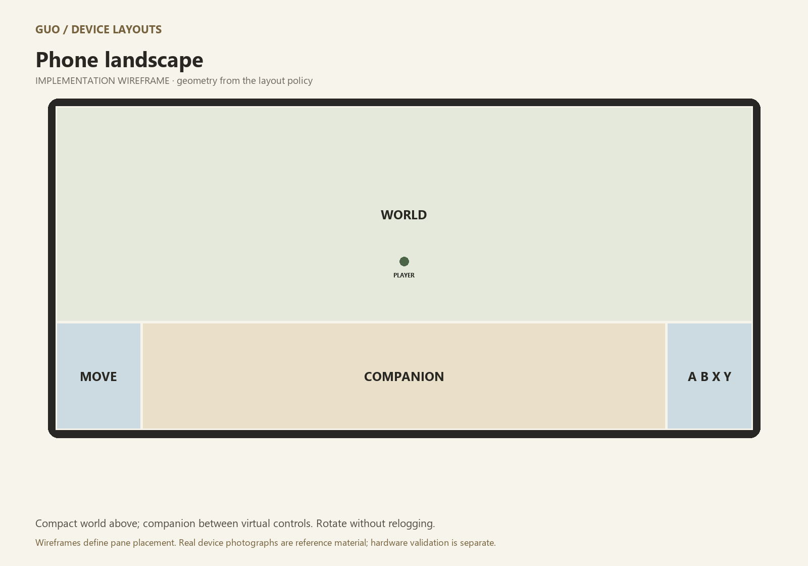
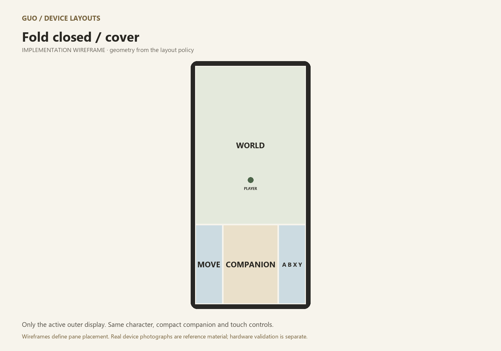
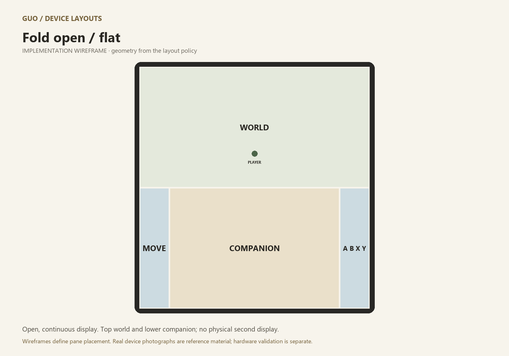
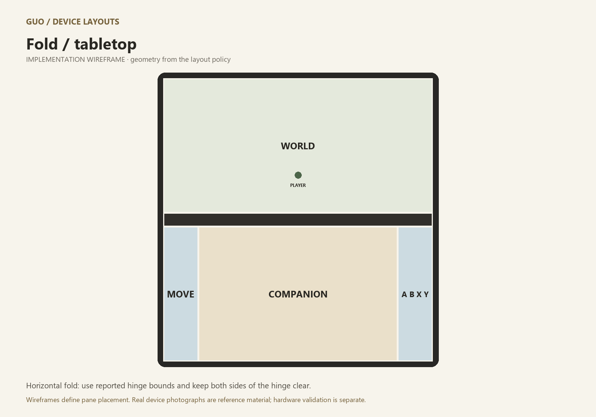
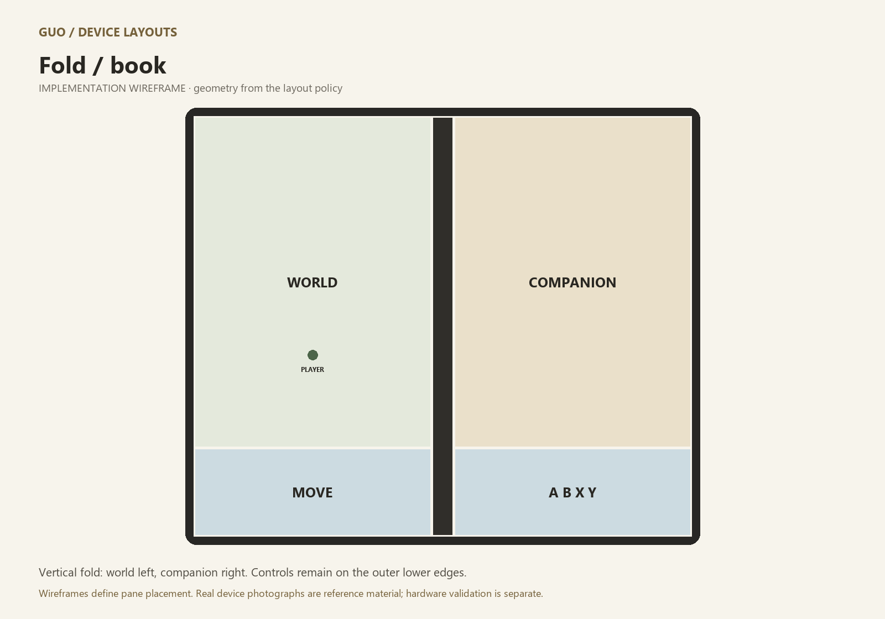
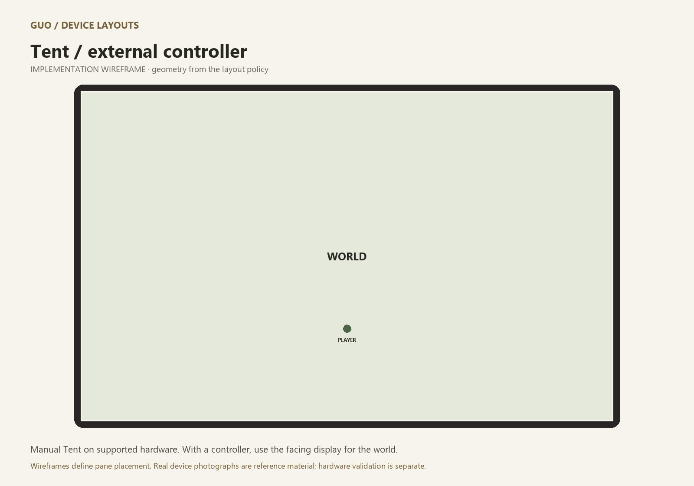
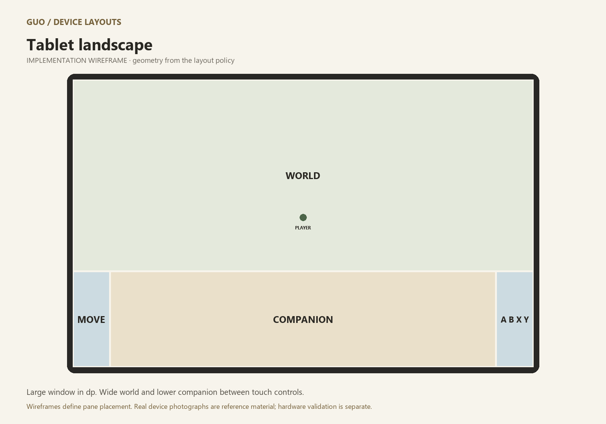
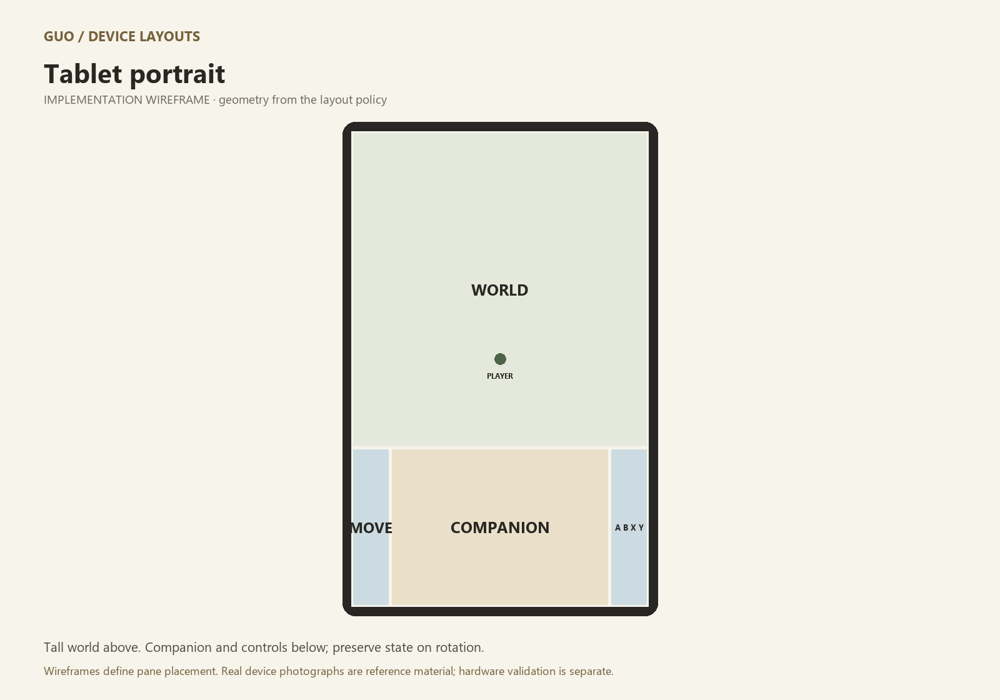
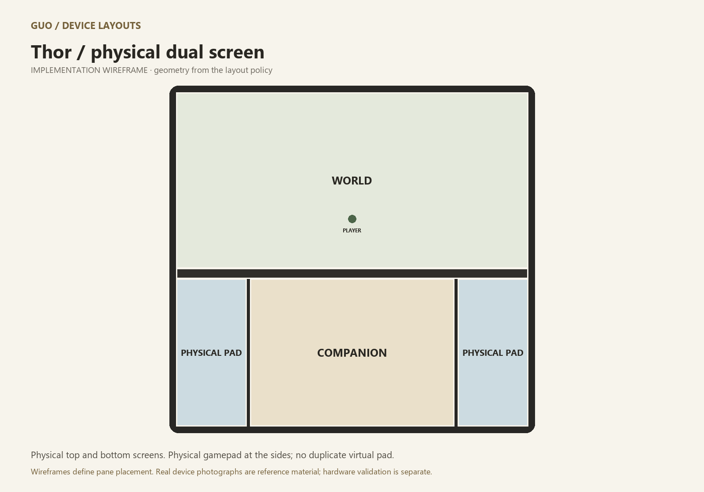

GUO / MOBILE UI DEVELOPMENT
Real devices. Reproducible layouts.
Phones, foldables, tablets and Android handhelds. Explore the layout policy and test it with GUO Device Test Manager.
The photographs below show real hardware with its original screen contents. They are references, not photographs of GUO running on those devices. GUO captures and layout diagrams are labeled separately.
Real device photographs
Photo credits and reuse licenses. No generated device renders are used in this gallery.
GUO in the Fold emulator

Actual emulator capture. World above the hinge; companion windows between movement and action controls below. This is not a physical-device photograph.Layout wireframes
Phone landscape

Compact world above; companion between virtual controls. Rotate without relogging.
Vector SVGFold closed / cover

Only the active outer display. Same character, compact companion and touch controls.
Vector SVGFold open / flat

Open, continuous display. Top world and lower companion; no physical second display.
Vector SVGFold / tabletop

Horizontal fold: use reported hinge bounds and keep both sides of the hinge clear.
Vector SVGFold / book

Vertical fold: world left, companion right. Controls remain on the outer lower edges.
Vector SVGTent / external controller

Manual Tent on supported hardware. With a controller, use the facing display for the world.
Vector SVGTablet landscape

Large window in dp. Wide world and lower companion between touch controls.
Vector SVGTablet portrait

Tall world above. Companion and controls below; preserve state on rotation.
Vector SVGThor / physical dual screen

Physical top and bottom screens. Physical gamepad at the sides; no duplicate virtual pad.
Vector SVGDeveloper testing
Launch GUO Device Test Manager with launchers\android\device_manager.bat. Select a device, launch/apply its profile, then install and run GUO. Capture screenshots, short videos and diagnostics with profile metadata.
SDK profiles model display geometry and fold events. Display-size presets cover additional Android phones and handheld aspect ratios. Vendor firmware, performance and physical controller mappings still require hardware. Thor lower-screen simulation is not a two-display test.
Tent is selected manually in GUO on supported hardware. Android does not expose a universal tent posture. Rotation and fold transitions release held input before reflow.
Behavior notes · Manager guide and coverage · Wireframe contact sheet